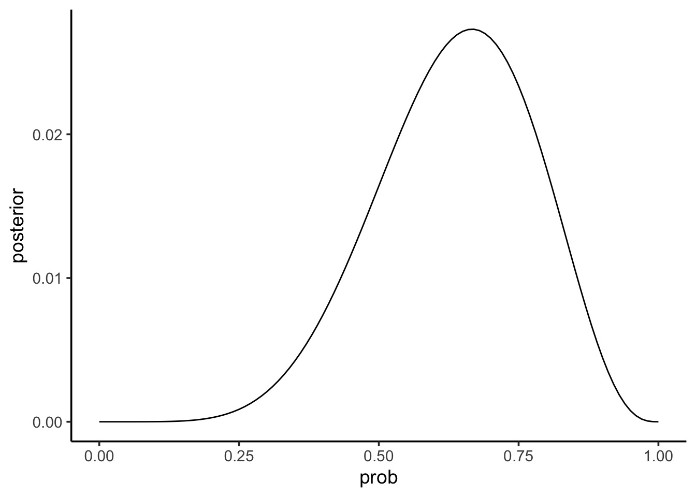
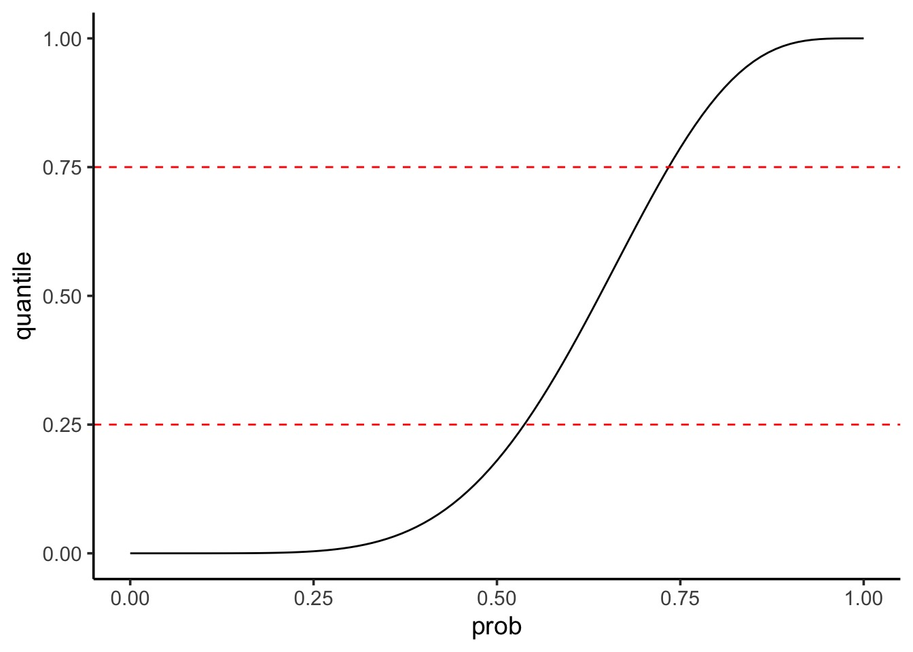
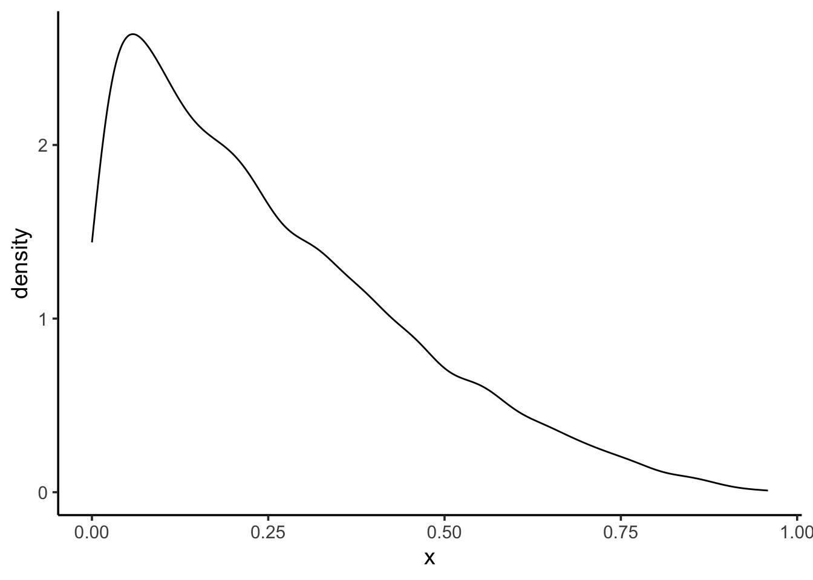

Sampling Your Posterior

The data
So, we’ve flipped the globe 6 times, and drawn
W,L,W,W,W,L,W,L,W

Grid Sampling
In a data frame:
1. Use seq to come up with a set of possible probability
values
2. Add a column of priors. Make it flat, so they’re all 1, or get
fancy.
3. Calculate your likelihoods for each probability with size=9 and
W=6
4. Calculate your prior * likelihood
5. Calculate your posterior, as the previous value divided by the sum of
all prior*likelihoods
And we’ve made a grid sample
library(dplyr)
# our hypotheses and prior = 1/nrow
grid <- data.frame(prob = seq(0,1,.01),
prior=1/101) |>
#calculate likelihood
mutate(likelihood =
dbinom(water, size = 9, prob = prob)) |>
# multiply by prior
mutate(posterior = likelihood*prior) |>
# divide by marginal (normalize)
mutate(posterior = posterior/sum(posterior))Note - if rounding error is a problem
# our hypotheses
log_grid <- data.frame(prob = seq(0,1,.01),
prior=1/101) |>
#calculate log likelihood
mutate(likelihood =
dbinom(water, size = 9, prob = prob, log = TRUE)) |>
# multiply by prior
mutate(posterior = likelihood + prior) |>
# exponentiate and divide by marginal (normalize)
mutate(posterior = exp(posterior),
posterior = posterior/sum(posterior))How do we query our posterior?
Our posterior
prob prior likelihood posterior
1 0.00 0.00990099 0.000000e+00 0.000000e+00
2 0.01 0.00990099 8.150512e-11 8.150511e-12
3 0.02 0.00990099 5.059848e-09 5.059848e-10
4 0.03 0.00990099 5.588844e-08 5.588844e-09
5 0.04 0.00990099 3.044058e-07 3.044058e-08
6 0.05 0.00990099 1.125305e-06 1.125305e-07Our posterior at it’s peak
prob prior likelihood posterior
1 0.67 0.00990099 0.2730674 0.02730674
2 0.66 0.00990099 0.2728850 0.02728850
3 0.68 0.00990099 0.2721339 0.02721339
4 0.65 0.00990099 0.2716211 0.02716211
5 0.69 0.00990099 0.2700592 0.02700591
6 0.64 0.00990099 0.2693188 0.02693188What does it look like?

Code
How do we query our posterior?
- We could look at all values of the posterior and
calcuate the density
- We could look at the highest posterior or weighted
average
- We could integrate over a selected range and…
AH! Intergrals? No! Samples? Yes!
- Posteriors summarize the frequency of certain
values
- We can leverage that and use our grid sample to
generate an empirical distribution
- This lets us develop an intuitive notion of the posterior, and manipulate it easily
Sampling from your Posterior
Sampling from your Posterior

Code
Sampling from your Posterior: MCMC style

Code
What can we do with this: histogram

Code
Histograms can show weakness of grid

Code
What can we do with this: density

Code
Summarizing a Parameter with a Sample
Summarizing a sample of a posterior: Questions we can ask
How much of the posterior is less than a certain value?
How much of the posterior is greater than a certain value?
What value of the posterior has the highest density?
What is the range of the values of some percent of the posterior? e.g., 90%
Looking at mass < a key value
- Let’s say we wanted the % of the posterior < 0.4
[1] 0.0504So, 5.04% of the posterior
Plotting an Interval

Code:
It’s a filter thang!
Try a few
What % is < 0.6
What % is > 0.6
What % is between 0.2 and 0.6
How do we describe a parameter
- Typically we want to know a parameter estimate and information about
uncertainty
- Uncertainty can be summarized via the distribution of a large sample
- We can look at credible (compatability) intervals based on mass of
sample
- We can look at credible (compatability) intervals based on mass of
sample
- We have a few point estimates we can also draw from a sample
- Mean, median, mode
Summarizing Uncertainty: 50th Percentile Interval
Summarizing Uncertainty: Percentiles
We can calculate quantiles using the cummulative density of the posterior
Summarizing Uncertainty: 50th Percentile Interval

Code
Summarizing Uncertainty: 50th Percentile Interval
Visualize as before

Summarizing Uncertainty: 50th Percentile Interval Code
Visualize as before
ggplot() +
#grid posterior
geom_line(data = grid,
aes(x = prob, y = posterior)) +
#the interval
geom_ribbon(data = grid |> filter(quantile > 0.25 & quantile < 0.75),
ymin = 0, aes(x = prob, ymax = posterior),
fill = "black")Note that this is not the Highest Posterior Density Interval
PI v. HPDI
- Percentile Intervals get interval around median that covers X% of
the distribution
- Highest Posteriod Density Interval gets interval with highest density containing 50% of mass of distribution
25% 75%
0.54 0.74 |0.5 0.5|
0.54 0.73 PI v. HPDI for a Skewed Distribution

Code
PI v. HPDI for a Skewed Distribution
25% 75%
0.09251207 0.37267543 |0.5 0.5|
9.248308e-05 2.082650e-01 PI v. HPDI

Code for HPDI and PI
# to get distributional properties
dens <- density(samp_bad)
hpdi_50 <- HPDI(samp_bad, 0.5)
#properties
interval_dat <- tibble(
prob = dens$x, # parameters
dens = dens$y/sum(dens$y), #standardized density
quant = cumsum(dens), #quantiles based on std dens
# use the quantiles for the PI
pi_50 = ifelse(quant >= 0.25 & quant <= 0.75,
dens,
NA),
# use the values from the HPDI for filtering
hpdi_50 = ifelse(prob >= hpdi_50[1] & prob <= hpdi_50[2],
dens,
NA)
) |>
tidyr::pivot_longer(cols = c(pi_50, hpdi_50))
## Plot!
ggplot(interval_dat,
aes(x = prob, y = dens)) +
geom_line() +
geom_ribbon(ymin = 0, aes(ymax = value),
fill = "darkgrey") +
facet_wrap(vars(name))So which interval to use?
- Usually, they are quite similar
- PI communicates distirbution shape for parameter
- HPDI matches more with the mass of the parameter that is consistent
with the data
- BUT - computationally intensive and sensitive to # of posterior
draws
- If the two are very different, the problem is not
which interval type to use
- It’s in your model/data! Buyer beware! SHOW YOUR POSTERIOR!
Which Point Estimate: Mean, Median, Mode?
[1] 0.636778[1] 0.65[1] 0.71Applying a Loss Function!
- Well, let’s think about the cost of getting it wrong!
- Assume a point estimate of d
- The cost of being wrong if using d is:
\(\sum{posterior * \left |(d-p)\right |}\)
- Could have also squared or done other things depending on cost of
being wrong
- Can apply this to chosing \(\alpha\) and \(\beta\) in frequentist stats!
Linear Loss Function Says Median (it’s close)!
# what is the cost of a given value being wrong
# for any parameter - linear addition
loss_fun <- function(d) {
dist_from_each_hypothesis <- abs(d - grid$prob)
scaled_distance_by_posterior_prob <-
grid$posterior * dist_from_each_hypothesis
cost_if_parameter_is_wrong <- sum(scaled_distance_by_posterior_prob)
}Linear Loss Function Says Median (it’s close)!
# iterate over all parameters
loss <- sapply(grid$prob, loss_fun)
# and the point estimate with the lowest cost is...
grid$prob[which.min(loss)][1] 0.64[1] 0.65Choosing a loss function
- Usually the mean and median will agree
- If the cost of being wrong is higher, go with the mean
- If this is a big problem, or big discrepancy, problem might be
deeper
- Examine your posterior! All of it!
Using your samples for model checking
Model Checking - Why?
- We’re in Simulation land
- A lot can go wrong do to small errors in our model
- A lot can go wrong because of big errors in our model
- Maybe our software failed (i.e., convergence)
- Maybe our sampling design cannot produce valid estimates
How do you check models?
- Did you reproduce your observed summarized data?
- Did you reproduce patterns in your raw data?
Simulating from your Posterior
- Make random draws using your sampled parameters
w n percent
0 10 0.0010
1 124 0.0124
2 336 0.0336
3 780 0.0780
4 1282 0.1282
5 1754 0.1754
6 1972 0.1972
7 1858 0.1858
8 1311 0.1311
9 573 0.0573Simulating from your Posterior Sample

Note that 6 is the peak, and our draw was w=6!
Getting Fancier with Checking
- We drew W,L,W,W,W,L,W,L,W
- Can we reproduce 3 Ws as the longest run?
- This will require fancier use of the posterior to simulate order of
observations
- See slide code - but, this empahsizes the subjective nature of model checking!
So, reproducing longest runs of W

We had many 3s - not bad, not spot on - is this a good model or check?
Code
getRuns <- function(prob, draws=9){
# toss that coin with a probability!
toss <- rbinom(draws, size=1, prob)
runs <- rle(toss) # gets run lengths of all values
runs <- runs$length[runs$values == 1] # filter to 1
# return 0 if all L, otherwise
# return the longest
if(length(runs) == 0){return(0)}
max(runs)
}
# iterate over all samples
samp <- samp |>
group_by(samp) |>
mutate(longest_run = getRuns(samp)) |>
ungroup()
simplehist(samp$longest_run)Your Model is a Simlating Golem!
- We can do a LOT with a simulated posterior
- We can explore intervals and shape to create
inferences
- We can explore intervals and shape to validate our
model
- Using posteriors to generate random numbers means
we can explore
- If our model TRULY matches our data
- Large-world relevance (external validity)
- Future implications of our model
- None of this is arbitrary statistical tests